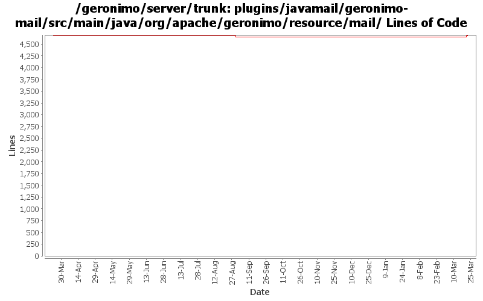

[root]/plugins/javamail/geronimo-mail/src/main/java/org/apache/geronimo/resource/mail

| Author | Changes | Lines of Code | Lines per Change |
|---|---|---|---|
| Totals | 24 (100.0%) | 106 (100.0%) | 4.4 |
| violalu | 3 (12.5%) | 80 (75.5%) | 26.6 |
| djencks | 1 (4.2%) | 26 (24.5%) | 26.0 |
| rickmcguire | 20 (83.3%) | 0 (0.0%) | 0.0 |
GERONIMO-5862 update mail/MailGBean jndi bound.
44 lines of code changed in 1 file:
GERONIMO-5862 remove tab from files
2 lines of code changed in 1 file:
GERONIMO-5862 bound ger:MailSession jndi to ger namespace.
34 lines of code changed in 1 file:
GERONIMO-434 for ee jndi go back to getting the connection factory each time from the connection manager since osgi jndi caches the connection factory for us
26 lines of code changed in 1 file:
GERONIMO-5201 Repace service versions of spec bundles with Geronimo latest versions.
0 lines of code changed in 20 files: